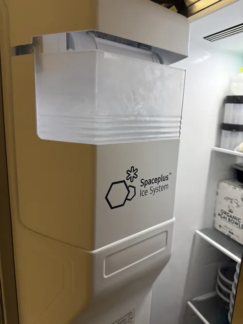

LG Refrigerator Repair: How Professional Diagnostics Save Money
When a refrigerator begins showing signs of trouble, many homeowners immediately focus on the cost of repair. It is natural to wonder whether a technician visit is necessary or whether replacing a part based on online research might solve the problem. However, one of the most common mistakes homeowners make is attempting to diagnose modern refrigerator issues without proper testing. In many situations, professional diagnostics not only identify the problem more accurately but also save significant money by preventing unnecessary repairs and reducing the risk of additional appliance damage.
Modern LG refrigerators are highly sophisticated appliances that combine advanced cooling systems, inverter compressors, electronic control boards, sensors, evaporator fans, communication circuits, and smart technology. Because so many components work together, the symptoms homeowners observe are often very different from the actual cause of the problem. Professional LG refrigerator repair begins with accurate diagnostics because successful repairs depend on understanding exactly what is causing the failure.
One of the biggest reasons professional diagnostics save money is that many refrigerator problems produce similar symptoms. For example, poor cooling performance can be caused by compressor issues, evaporator fan failures, airflow restrictions, sensor malfunctions, frost buildup, refrigerant problems, or electronic control board failures. Without proper testing, homeowners may replace multiple parts while the original problem remains unresolved.

A common example involves refrigerators that stop cooling properly. Many people immediately assume the compressor has failed because cooling performance has declined. In reality, a faulty temperature sensor, blocked airflow system, failed fan motor, or control board issue may be responsible. Replacing a compressor unnecessarily would result in significant expense while failing to solve the actual problem. Professional LG refrigerator repair diagnostics help avoid these costly mistakes.
Error codes provide another example. Modern refrigerators often display warning messages when irregular operating conditions are detected. While these codes provide useful information, they rarely identify a specific failed component. An error code may point to a system that requires attention rather than a single defective part. Experienced technicians use diagnostic procedures to determine why the refrigerator generated the code instead of relying solely on the displayed message.
Ice maker problems frequently illustrate the value of professional diagnostics as well. Homeowners often replace ice maker assemblies only to discover that the issue involves water supply restrictions, frozen fill tubes, sensor failures, control board problems, or cooling system deficiencies. Proper diagnostics identify the true source of the failure and help avoid unnecessary parts replacement.
Another way diagnostics save money is by preventing additional refrigerator damage. Small problems often place extra stress on related components. A failing evaporator fan motor, for example, may create airflow restrictions that force the cooling system to work harder.
If left unresolved, additional components may eventually be affected. Early diagnosis allows technicians to address developing problems before they lead to larger and more expensive repairs.Professional diagnostics also improve repair efficiency. Rather than replacing parts through trial and error, technicians use testing equipment and systematic troubleshooting procedures to isolate the root cause quickly. This approach reduces unnecessary labor, minimizes downtime, and helps homeowners return their refrigerator to normal operation sooner.
Modern smart refrigerators make diagnostics even more important. Advanced electronic systems, digital controls, Wi Fi connectivity, and inverter compressor technology create new opportunities for performance monitoring but also increase repair complexity. Professional LG refrigerator repair technicians receive ongoing training that helps them stay current with evolving appliance technology and diagnostic methods.
Accurate diagnostics can also help homeowners make better repair versus replacement decisions. Not every refrigerator problem requires major repairs. In some situations, a relatively minor component may be responsible for symptoms that appear severe. Conversely, some failures may involve multiple systems that influence long term appliance value. Professional evaluation provides the information needed to make informed decisions about the future of the appliance.
Preventive maintenance often begins with diagnostics as well. During service visits, technicians may identify developing issues that have not yet created noticeable symptoms. Addressing these conditions early can help improve refrigerator reliability, reduce future repair costs, and extend appliance lifespan.
Professional LG refrigerator repair is not simply about replacing failed parts. It is about understanding how modern refrigerator systems operate and identifying the precise cause of performance problems. Accurate diagnostics eliminate guesswork, reduce unnecessary expenses, prevent recurring failures, and protect homeowners from making costly repair decisions based on incomplete information.
When refrigerator problems arise, professional diagnostics often represent one of the most cost effective investments a homeowner can make. By identifying the true source of the issue and guiding appropriate repairs, diagnostics help restore reliable refrigerator performance while saving both time and money over the long term.